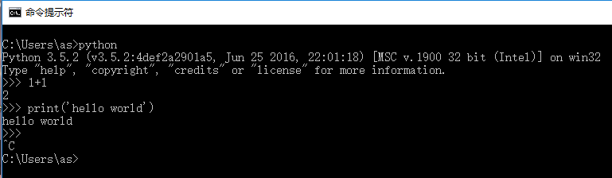

无敌懒的石海鹏终于动笔了。
有这么一些日子里，我十分堕落，但正如古话所言，感谢那些将我击倒的人，躺着真舒服。我是万万没想到我竟然又回到了科大实验这个屠宰场学习圣地。我无限堕落了快一个月，在一个月以来，我几乎就没有学习过，更别提什么编程了，结果这次月考竟然凭如此惨不忍睹的成绩都能排前三，为这个年级的前途担忧ing…。
有一天，终于有人找我学编程了，于是我便盘算着写了这么一篇。我还想录视频的，因为视频讲得清楚，但还是没有那个勇气 主要是太尴尬了。
所以，开始我们的编程哲学之旅吧。
安装
官网下载，下载安装包就可以了（因为安装包会自动下载pip，而压缩文件中没有）。推荐科学上网下载（快一点）。下载2.x或3.x都行，无所谓的。官网不行找网盘，网盘不行我还有个备份。安装的话有什么点什么，反正加起来才30mb，装在C盘没问题。重要的事情再说一遍，pip一定要安装。以后有大用。
更改
在适当调教之前pip是一个坑。原因是她下载总是超时（对此她也很无奈，谁让有一个墙在那里）。顺便提醒，在下面文件夹下建立一个pip文件夹C:\Users\Administrator\AppData\Roaming，而且这个AppData文件夹挺难找的（“查看”->显示隐藏项目）。附几个pip用法。
开始
最标准的hello world又来了。。。
cmd->输入python->输入python语句->Ctrl+C退出。

最后说一点
编程靠自觉，靠自学。实话说，我就是个水货。python我懂得不多，但带一个人入门还是可以的。
python也可以网页在线编译，搜索“python 在线运行”。就这样了。